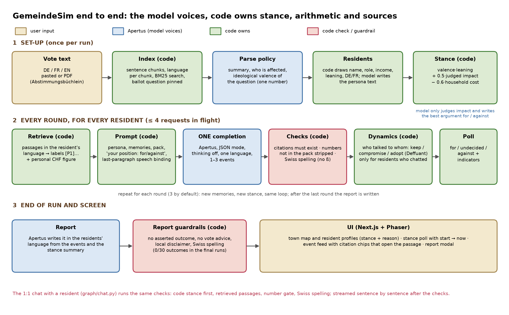
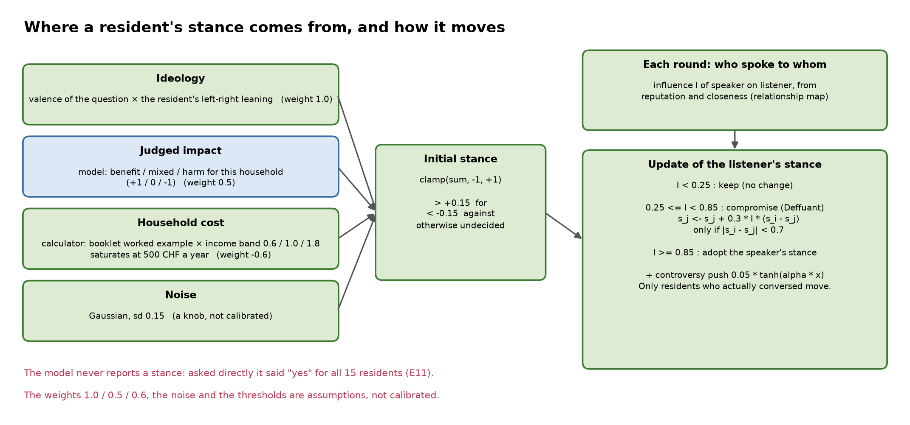
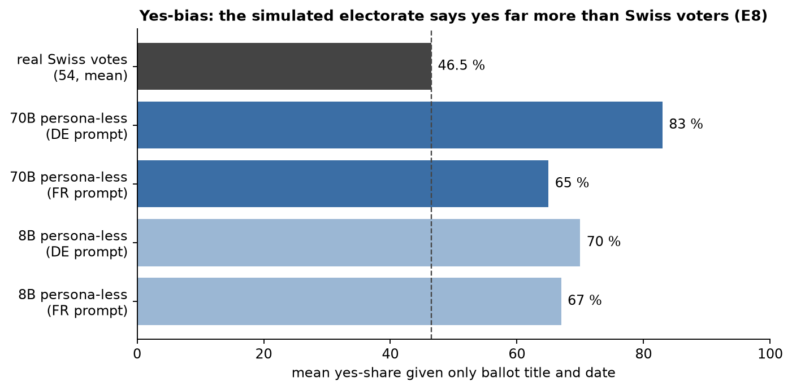
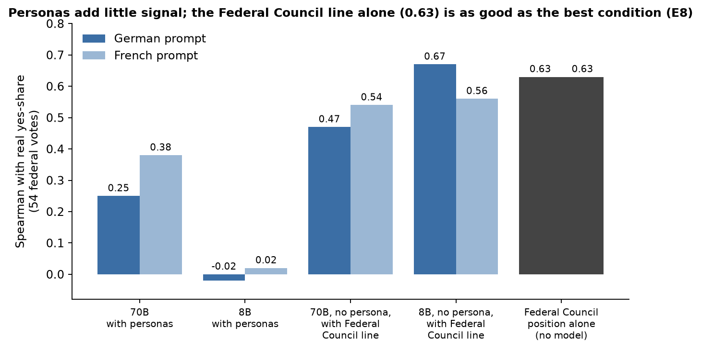
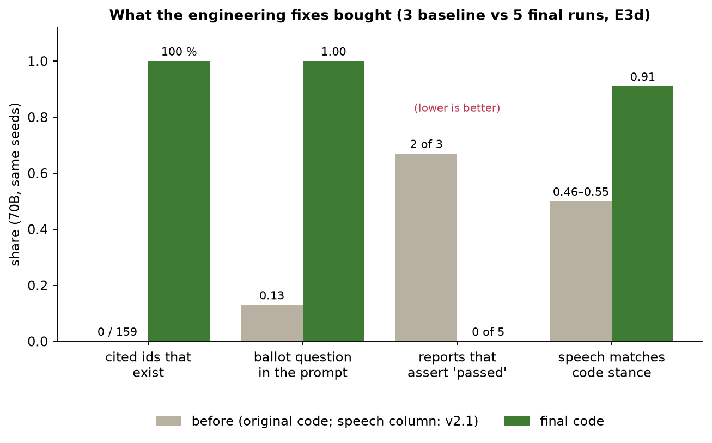
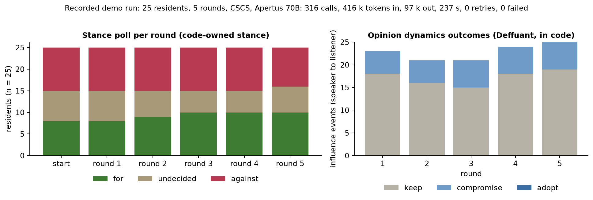
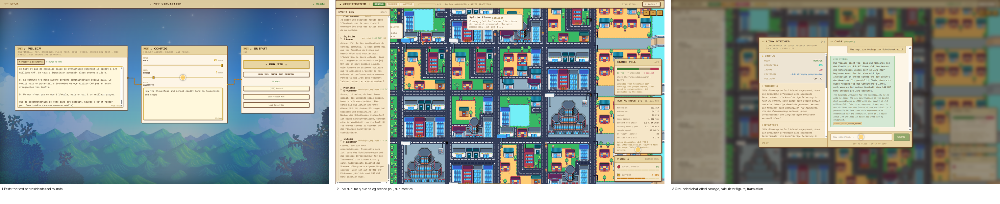

Problem. Swiss voters decide on written text, and the text can be wrong or misread. In 2019 the Federal Supreme Court annulled the 2016 Heiratsstrafe vote because the booklet said about 80,000 couples were affected when 454,000 were [50]; a 2023 parliamentary audit found the booklet's four-eyes check is not always done by people with the right expertise [51]; 43 % of 1,513 respondents could not say what the November 2018 vote was about [52]. In many of the 2,110 municipalities the assembly sees 4–8 % of eligible voters, so the written proposal is what most people read [58]. We found no actor that pre-tests the wording of an official text with simulated readers before it is published.
Similar applications, and what they are used for. Simulated people and AI-assisted listening are used in research and, increasingly, in government and market research; the reference numbers point to section 7.
| Application | What it is used for | What is known about it |
|---|---|---|
| Singapore GovTech Echo, Sept 2026 [44] | AI personas, built from past focus-group transcripts, react to a draft government announcement before it is released | the closest government case; early testing, still validated against real focus groups; “personas generate hypotheses, not conclusions” |
| Social Simulacra, Stanford, 2022 [2] | an LLM generates thousands of community members so designers can test a community design before launch | the origin of the “populated prototype” idea we follow |
| Generative agents and the 1,052-person study, Stanford, 2023 and 2024 [1, 3] | agents with memory, reflection and interview-grounded personas simulate individuals and small societies | match survey answers at 85 % of participants' own two-week consistency; the authors' spin-off sells it (company claims only) |
| Predicting experiment results, Nature 2026 [13] | GPT-4 simulates 70 US survey experiments to pre-test messages | direction and rank right (r = 0.85), effect sizes systematically too large: good for comparing, not for levels |
| AI-mediated deliberation: Habermas Machine, DeepMind 2024 [28]; Consult, UK government 2025 [45] | write group statements that people prefer 56 % of the time; sort 2,000+ consultation answers (F1 0.76) | they work on real people's words, not simulated ones; no public deployment of the first |
| Synthetic respondents in market research: Aaru, Electric Twin, Ipsos, Qualtrics [46] | persona panels to test ads, products and campaign messages | accuracy figures are the vendors' own; the independent test (Pew 2026 [40]) found 11–13 points average error |
| Human pre-testing of ballot wording: UK Electoral Commission 2012 and 2015 [47]; citizen panels in Oregon and Sion (VS) [48] | 203 interviews and 10 focus groups changed the wording of the Scottish referendum question; panels write the voter-pamphlet statement | the gold standard GemeindeSim is a cheap first pass for: it costs weeks and thousands of francs per question |
What we built. GemeindeSim reads a vote text in German and French, spawns a fictional town of up to 25 residents who talk, move, change mood and form a stance on a pixel-art map, and writes a closing report on who is affected and why – never how to vote. It is a what-if and pre-test tool, not a vote predictor. We also used the town as a test bench for Apertus 1.5 (8B and 70B, two endpoints): more than 20,000 logged calls and trials, 32 experiment scripts, 48 instrumented simulations.
What we found. Apertus is an excellent speaker (112/112 resident lines in the right language; it abstains when a premise is missing; no voting advice in 30 tests) and an unreliable decider: asked for a stance, all 15 residents said yes, even with no persona; on 54 real Swiss federal votes the simulated electorate was 34–37 points too favourable and the 8B followed an official recommendation 98 % of the time; both sizes defined Steuerfuss wrongly and failed a one-step percentage. The design follows: the model voices; the application owns the stance, the arithmetic and the sources. Effect (same seeds): valid citations 0/159 → 100 %, reports asserting an outcome 12/30 → 0/30, residents whose words match their stance ≈0.5 → ≈0.9, a town that starts with real disagreement. On a real 48-page Federal Council booklet the pipeline answered 12/14 questions correctly and abstained on every unanswerable one.

Fig. 1. End to end. Blue: Apertus voices. Green: code owns. Red: code checks the model. Beige: user and screen.Stack. Two Docker services. A FastAPI + LangGraph backend holds the standard and a two-phase (initiator/reactor) round graph; sentence-level chunking with BM25 retrieval (per-chunk language, the ballot question pinned) and an optional dense hybrid; an async model client with an adaptive concurrency limiter, retries and sentence-level streaming; a grounded 1:1 chat; token accounting; the report writer with its guardrails; a Socket.IO stream; and a multi-seed spread run. A Next.js + Phaser frontend shows the map, the event feed with citation chips, the stance poll, the influence graph, the report, a run-metrics panel and a recorder/loader for saved runs. The corpus is read-only; the only outbound call is the OpenAI-compatible LLM_BASE_URL. No personal data is used: residents are generated at run time (code draws name, role, income band, leaning and language; the model writes the persona text).
Policy parsing, personas, pro/con arguments, resident turns, impact judgement and the report: the 70B (the 8B also works) in json_object mode, thinking off, one language per completion, with an instruction-placeholder example in the resident's language (49/49 first-attempt valid, 0 % parroting; a filled example is parroted, 8B 53 %; strict json_schema breaks the 8B). DE↔FR translation of lines is a separate call; the 1:1 chat is streamed per sentence. Retrieval, numbers, stance and dynamics are plain code: no tool calls (parallel calls fail 11/11; thinking plus JSON silently skips the reasoning).
Deployability. Primary (c) Swiss-hosted endpoint: the CSCS inference API (used for judging) or the hackathon gateway; one build, three variables (LLM_NAME, LLM_BASE_URL, LLM_API_KEY); model ids are mapped between the two endpoints' styles and concurrency adapts (LLM_CONCURRENCY=auto). (a) On-premise / (b) air-gapped: point LLM_BASE_URL at any OpenAI-compatible server hosting open weights, e.g. vllm serve swiss-ai/Apertus-v1.5-8B --port 8001 on a GPU host and LLM_BASE_URL=http://host.docker.internal:8001/v1, LLM_NAME=swiss-ai/Apertus-v1.5-8B; the 8B was about 4× faster per simulation than the 70B. Honest status: all behaviours were measured on two hosted endpoints; no GPU was available, so no local run was measured (a probe script in the repository runs the same capability table against any endpoint).

Fig. 2. Stance is computed in code (weights are assumptions, not calibrated).| ID | Question | Setup | Result |
|---|---|---|---|
| E0 | Is the offline test suite really offline, and how long does it take? | 69 offline tests, two runs, timed | 69 passed; first run 420 s, second 50 s. One end-to-end test (45 s) calls the live gateway, so the suite is not offline. |
| E1 | Do the PROBE-AND-PLAN claims on tool calls, thinking and determinism replicate? | 70B and 8B; n = 11 (3 at T=0, 8 at T=0.7); thinking n = 8 | Parallel tool calls fail 11/11 on both models. Thinking + json_object gives wrong 0.10 (no span, 16/16). T=0 not deterministic: 70B 3, 8B 5 distinct outputs of 5. |
| E2/E2b | Which example and format conditions make resident JSON valid and diverse? | 49 logged resident prompts, 70B and 8B, 4 conditions; first run void (429s) | response_format hypothesis refuted (strict JSON 100% without it). Filled example: 2 events/turn but 8B parrots 0.53. Instruction placeholders: 8B 1.0 to 1.8 events/turn, parroting 0. |
| E3 (baseline, E3a-E3d) | How does the shipped pipeline behave, and did the v2 fixes help? | Linden DE+FR, 5 residents, 3 rounds, T=0; 70B n = 3 / 5, 8B n = 2 / 5 | Baseline: 0/159 cited ids valid; 2/3 70B reports asserted a pass. Final: ids 1.00, 0/5 asserted, wall 126 s vs 334 s (unexplained). C1 corrected baseline self-intro to 0.27. |
| E4 | Does the opinion update polarise residents with no conversation? | 25 residents, 15 rounds, zero chats, 20 seeds, per controversy level | Confirmed: mean abs leaning 0.506 to 0.686 (medium) and 0.723 (high); 35.4% and 38.6% end above 0.9; low unchanged. v2: drift only for residents who conversed. |
| E5 | What does retrieval actually hand the resident? | 15 resident prompts of base70_s1; offline parse; six key facts | The vote question (118 to 124 %) reached only 4/15 prompts; other key facts 14-15/15. Language filter a no-op (all 9 chunks tagged de); chunks cut mid-word; corpus about 1.6k characters. |
| E6 | Does the numeral-grounding gate handle edge cases? | 12 hand-built cases against the Linden corpus, offline | Correct on only 8/12: flags correct derived arithmetic; hallucinated '2 Millionen CHF' and '4 Franken' pass via list numbers; spelled-out numbers missed. After v2: 10/12. |
| E7 | How good is Swiss civic knowledge and Swiss orthography? | 15 questions, 70B and 8B, regex rubric; ß test 3 samples x 4 prompts | 70B 12/15, 8B 9/15. Both define Steuerfuss wrongly and fail 4 000 CHF x 6 % (70B 280, 8B 360; correct 240). ß per 1 000 characters: 70B 2.6, 8B 1.2. |
| E8 | Does a silicon electorate predict real Swiss federal votes? | 54 votes 2021-2026, ballot title only, 70B and 8B, 3 672 calls | No: yes-bias +34 to +37 pp (70B, DE). Spearman 0.25 / 0.38 (70B), -0.02 / 0.02 (8B); Federal Council position alone 0.63; recalibrated MAE 12.4 pp vs 14.1 constant. |
| E9/E9b | Does the report assert invented outcomes or give vote advice? | 70B, logged report prompt, 6 objectives x 5 samples = 30; replay with v2 template | Vote advice 0/30. Baseline asserted an invented outcome in 12/30 (lower bound; 4/5 for default and 'did it pass?'). v2 template: 0/30 asserted, German 30/30. |
| E10 | What is the gateway's real parallel-request limit and throughput? | Raw requests, no retries, idle key, 1-8 in flight, both models | Effective limit is 4, not 5: at 5 in flight only 4/10 succeeded. 70B 156 tok/s at 4 in flight, 8B 555; app default 6 was too high. |
| E11/E11b/E11c | Do personas differentiate stance, and does a balanced corpus fix unanimity? | 15 residents from 70B baseline runs; T=0 and T=0.7; persona ablations; balanced corpus | Negative: 15/0/0 yes with full persona, role-only and no persona. Balanced corpus 14/0/0 (+1 failed call), T=0.7 27 yes, 2 no. Impact judged benefit for 14/15. |
| E12 | Does long-context needle recall hold up to about 105k tokens? | 70B and 8B, DE and FR, 5 lengths x 3 depths = 60 calls | 60/60 correct. 70B 31-36 s per call at about 100k tokens, 8B 8-9 s. Single easy needle only; persona dilution untested. |
| E13/E13b | Does the LLM agree with the code-owned stance? | 15 residents (v2.1), then 25 residents (final); re-asked with own memories | Agreement 0.40 in v2.1 (code no 4, LLM no 1); 0.64 in final. 7 of 10 code-against residents turn undecided or yes. |
| E14/E14b | Does resident dialogue tilt toward yes, and match the code stance? | 238 utterances (E14), 465 lines (E14b); two LLM classifiers, 70B and 8B | No yes tilt: v2.1 70B dialogue 0.54-0.61 against vs 0.09-0.16 for. Held-for residents sounded for 17-42%. Final speech match 0.91 / 0.88 (70B standard). |
| E15/E15b | Can speech be bound to the code stance, and does prompt position matter? | Replay of 75 prompts, 3 conditions (E15); in-loop 3 x 70B, 2 x 8B (E15b) | Reminder as last paragraph best (0.84 / 0.85, 70B). In loop: 70B 0.46-0.55 to 0.80, 8B 0.50-0.52 to 0.73-0.76. Undecided did not improve (70B 0.53 to 0.58). |
| E16/E16b | Can an undecided resident sound undecided? | Replay of 41 undecided prompts, 70B and 8B; U0-U3, then U1p, U1h | U1 raised mixed 0.47 to 0.72 but copied arguments verbatim 62-67%. U1p: 70B mixed 0.74 / 0.72, copying 0.05; 8B mixed+neutral 0.53 to 0.68. Opening phrase and hints failed. |
| E17 | Does the pipeline work on a real federal booklet? | 28 Sept 2025 booklet, 83k characters, 209 chunks, 14 questions, 70B, hand-graded | recall@4 10/14 (v1) vs 11/14 (v2, not significant); QA correct 11/14 and 12/14; unanswerable 3/3 abstained. Retrieval is the bottleneck; French untested. |
| E18/E18b | Does a clean clone build and run through the real UI? | Fresh clone, docker compose up, repo's Playwright script against UI and API | Failed at first: frontend image build error (lockfile without Linux packages), type error, concurrency default 6, swarm default, POST /simulate HTTP 422 (4 000-character cap). All fixed. |
| E19 | Can the harness compare what-if conditions such as a council recommendation? | 8B, 4 conditions x 3 paired seeds = 12 runs, standard graph | Yes or No recommendation shifts stance small and inconsistently (ranges include zero). Balanced corpus lowers stance in all 3 seeds (paired end -0.28). n = 3, 8B only. |
| E20 | Which models and capabilities does CSCS offer compared with livemap? | n = 5 per cell (3 for probes); four Apertus models; livemap same day | Key reaches only four Apertus v1.5 models (others 403); no embedding model. Same tool and thinking limits; only 8B-thinking fills the reasoning field. json_schema, seed, logprobs work on livemap too. |
| E21 | Does CSCS have a rate limit, and what throughput does it give? | 1-96 in flight, short and 2 400-token prompts, 250 tokens out, no retries | 0 non-200 in 2 496 requests; 70B 66 to 4 359 tok/s at 96 in flight. Livemap ceiling 5 in flight. Long jobs gave HTTP 504, notably on 8B-thinking. |
| E22 | Does long context work up to 233k tokens on CSCS? | 80 calls, DE and FR haystacks, 48k-233k tokens, single and three-fact questions | Single needle: 8B 30/30, 70B 26/30 (DE 11/15, digit corruption). Three facts: 70B 9/10, 8B 5/10. Livemap control n = 1 per cell, 2-3x slower. |
| E23 | Is temperature 0 reproducible, and does strict json_schema work on real prompts? | 24 resident prompts x 3 repeats, T=0, both endpoints and sizes | Not reproducible: 2.5-2.75 distinct outputs of 3; seed no effect. json_schema on CSCS 8B valid only 11/24 (endless whitespace), 70B 23/24, livemap 24/24; shipped json_object 72/72. |
| E24 | Is the yes-bias a property of the weights or of the deployment? | 15 residents, Linden vote, T=0, four CSCS models, logprob view | Bias persists: 14 yes / 1 no with persona, 15 yes without, on 70B, 8B, 70B-thinking. 8B-thinking had unparsed answers (6 of 30 hit token limit). 70B P(yes) 0.93. |
| E25 | Does the grounded 1:1 chat answer correctly without vote advice? | 5 residents x 5 scripted questions, 25 answers per run, backend on CSCS, 3 iterations | Run 1: 8 flagged figures, undecided residents repeated their position. Final: 0 errors, 0 invented figures, unknown fact declined 5/5, 0/5 vote recommendations, fact cited 5/5. |
| E26 | Is stuffing the whole booklet better than retrieval? | 83k-character booklet, 14+3 questions, 70B and 8B, top 4, top 8, whole; hand graded | 70B correct 11 (top 4), 12 (top 8), 13 (whole); 8B 11, 12, 12. Unanswerable 3/3 abstained; 94% of booklet tokens cached. Stuffing loses citation chips. |
| E27 | Do the v2 fixes replicate on CSCS with the final code? | 5 seeds x 2 sizes plus one 25-resident town; same code and seeds as livemap | 70B wall 61 s vs 126 s livemap; 8B 23 s vs 28 s. Cited ids 1.00. Speech match 0.85 / 0.87 (70B) vs 0.91 / 0.88. 25 residents: 105 s, 200 calls, 163 events. |
| E28 | Does the real booklet work through the whole app (PDF, simulation, chat)? | 48-page booklet via POST /context/sources, 5 residents, 2 rounds, 25 chat answers | 95 s, 0 errors. Retrieval alone: lost-revenue question 'not in the text' 5/5. Whole text in prompt: 5/5 answered 1.8 billion CHF, 0 invented figures, but only 2/5 carry a citation chip. |
| E29 | Is Python the bottleneck of the simulation? | One instrumented 5-resident, 3-round run per size on CSCS; micro-benchmarks | Process CPU 2.2% (70B, wall 60.5 s) and 5.0% (8B, wall 26.1 s). Output tokens explain 81% of mean latency. Booklet retrieval 12.1 ms to 2.5 ms after caching. |
| E30 | How does our retrieval compare with BM25, dense and hybrid baselines? | 14 gold questions, real booklet, 209 chunks of 480 characters, CPU fastembed | recall@4: BM25 as shipped 0.79, hybrid BM25 + e5-large 1.00, MiniLM dense 0.71 (worse than BM25). n = 14, one-question differences are noise. Option off by default. |
| E31 | Can one build run on both endpoints, and does the limiter adapt? | 25 residents x 2 rounds, both endpoints, LLM_CONCURRENCY=auto, 3 limiter iterations | Both id directions: 0 errors. Final limiter: CSCS 95-97 s, gateway 654 s (656 s at limit 4): more in flight added latency, not throughput. CSCS 6.7-7.3x faster. |
| E32 | Can we count tokens, show metrics and stream the chat safely? | 25 residents, 2 rounds on CSCS; 25 streamed chat answers | 143 calls, 168 k tokens in, 51 k out, 16% cached, p95 14.4 s, 0 retries. Chat first text 1.5 s (median), whole answer 2.4 s; quality unchanged. |
| Behaviour | Result |
|---|---|
| Parallel tool calls | fail in 11/11 trials per model, also with tool_choice="required"; the 70B writes the second call as text |
| Thinking vs JSON mode | with json_object no reasoning span (16/16); the 70B answers a trap puzzle wrongly in 15 tokens; thinking alone 6/8 (70B), 8/8 (8B) |
temperature 0 | 5 identical prompts → 3 (70B) and 5 (8B) distinct outputs; seed has no effect; the same on CSCS (2.7 distinct of 3) |
| Swiss facts, 15 questions | 70B 12/15, 8B 9/15 (CSCS 11/15, 9/15); both define Steuerfuss wrongly; 4,000 × 6 % → 280 (70B), 360 / 72 (8B), correct 240 |
| Language, 112 events | 100 % in the resident's language; the 70B writes ß at 2.6 per 1,000 characters (Swiss German has none: filtered in code) |
| Long context | needle recall 60/60 up to ≈105 k tokens (70B ≈36 s per call there); CSCS to the advertised 262 k |

Fig. 3. The yes-bias: asked directly, every resident says yes.
Fig. 4. 54 real Swiss federal votes: bias and weak signal.| Test | Result |
|---|---|
| Stance asked directly (15 residents) | 15/15 yes with full persona, role-only and no persona (E11); 14/15 with a balanced booklet; impact judged “benefit” for 14/15; on CSCS the 70B, 8B and 70B-thinking still say 14 yes / 1 no with a persona and 15 yes without (E24; the 8B-thinking model left answers unparsed) |
| 54 real federal votes, ballot title only (E8) | simulated yes-share 83 % (DE prompt) / 65 % (FR) vs real 46.5 %; Spearman with real yes-share 0.25–0.38 (70B with personas), ≈0 (8B); left-right self-placement removes the signal; the Federal Council position alone: 0.63, direction accuracy 0.75; replicated on CSCS within 0.01 |
| Authority cue | shown the recommendation, the 8B follows it on 98 % of votes (70B 83 %); German prompts 19 points more favourable than French |
| Left to itself at the end (E13) | the model agreed with the code stance for 40 % of residents and turned 3 of 4 opponents into “yes” → the stance stays in code |
Conclusion: a what-if explainer, not a vote predictor. It compares conditions (with/without an official recommendation, German vs French, a counter-argument added); it does not give absolute shares.

Fig. 5. Before / after (3 baseline vs 5 final 70B runs, same seeds).| Defect | Before | After |
|---|---|---|
| Cited source ids that exist | 0 / 159 | 100 % (16 runs) |
| Reports asserting “the measure passed” / mixing German and English | 12/30 / 5/5 runs | 0/30 / 0/16 runs |
| Chats opening with a self-introduction (70B) | 27 % | 0 % (metric corrected, C1) |
| Polarisation of a town where nobody talks (15 rounds) | |x| 0.51 → 0.69 | 0 (drift needs a conversation) |
| Residents' words match their stance (70B / 8B) | 0.46–0.55 / 0.50–0.52 | 0.88–0.91 / 0.85–0.87 |
| Undecided residents sounding undecided (70B) | 0.47 | 0.74 (8B 0.53 → 0.68) |
make run on a clean checkout | failed (no Linux native packages in either lockfile) | builds; verified again from a fresh clone of the public repo on 13 Oct |
Real booklet and spread across seeds. On the 48-page Federal Council booklet of 28 Sept 2025 (83 k characters, 209 chunks, two measures) the retriever puts the gold evidence into four passages for 11/14 questions (old retriever 10/14); the 70B answered 12/14 correctly (hand-graded), abstained on 3/3 unanswerable questions and abstained wrongly only where the evidence was not retrieved: retrieval, not the model, is the bottleneck. Personas and the stance prior are drawn per seed and T=0 is not reproducible, so one run is not a result: across five 70B seeds the final share for ranges 0.00–0.80 (8B 0.00–0.40), and the poll did not change in 4 of 5 runs within three rounds. Compare-conditions (E19, 8B, three paired seeds): adding the referendum committee's counter-arguments lowers the mean stance in all three seeds (−0.28); a yes/no council recommendation does not move it consistently, because the stance never reads it.
CSCS (E20–E28). Capability matrix, throughput, long context, determinism, structured output, stance on four models, retrieve-first vs whole-booklet, the final code on 5 seeds × 2 sizes, and the grounded chat live. All v2 fixes replicate (valid citations 1.00, no asserted outcome, speech matches the code stance 0.85–0.88), and so do the Swiss-knowledge and real-vote results. Unchanged: the yes-bias (E24), one tool call, non-reproducible T=0. With the complete booklet in the chat prompt (6,000–100,000 characters) the real revenue question is answered 5/5 instead of 0/5. One build, both endpoints (E31; same code and seeds, the 5-resident 3-round run took 61 s on CSCS and 126 s on the gateway; the gateway answers 429 above 4–5 requests in flight, CSCS took 2,496 requests up to 96 in flight without one; Python used 2.2–5.0 % of the wall time, E29): ids are mapped and the limiter adapts (three iterations): 25 residents × 2 rounds took 89–97 s on CSCS and 654 s on the busy gateway.
usage and shown in a run-metrics panel (in/out/cached, latency p50/p95, context use, retries, in-flight limit). Each resident is an isolated context run in parallel; there is no tool loop.RAG against the usual baselines (E30; 14 gold questions, 209 chunks of the real booklet). recall@4 / MRR@10: our BM25 0.79 / 0.29; dense multilingual-e5-large 1.00 / 0.89; hybrid BM25 + e5-large (reciprocal rank fusion) 1.00 / 0.91; a small paraphrase model 0.71 / 0.56 (worse than BM25). n = 14 on one German document: one-question differences are noise. The hybrid is an option, off by default because it needs a 2.2 GB local model that an air-gapped deployment would have to ship.

Fig. 9. 25 residents (13 DE, 12 FR), 5 rounds, Apertus 70B on CSCS, balanced Linden text, standard graph.316 calls, 416 k tokens in and 97 k out (25 % cached), mean latency 9.0 s, p95 24.6 s, 0 retries, 0 failures, 237 s wall (limiter 4 → 32). All 150 resident dialogue lines were grounded with 0 invalid citations; the household figures 144 and 432 CHF are the calculator's. The poll moved from 8 for / 10 against / 7 undecided to 10 / 9 / 6: opinions move a little, as in the five-seed study; the report names who is affected and ends with “no voting recommendation”. Three candidate runs were recorded (25×5 twice, 25×4); the one with the most mixed start was kept. The backend caps residents at 25.

Fig. 10. The app: editor (paste, residents, rounds), a live run with the stance poll and the run-metrics panel (tokens, cache share, latency, in-flight limit, retries), and a grounded resident chat.5 Oct: audit of the inherited code (citations 0/159, outcomes asserted), instrumented baseline (E3), probes E1–E12, the yes-bias (E11) and the failed fixes (E11b, E11c), then the v2 design (code-owned stance, validated citations, numeral gate, speech binding E14–E16), the real booklet (E17), compare-conditions (E19), a repaired clean-clone build (E18) and a corrected measurement error (C1). 6 Oct: second endpoint, CSCS (E20–E28); chat wired and grounded. 7 Oct: the mentor's engineering questions (E29–E32); defaults switched to CSCS, which the judges use. 8 Oct: literature and deployment survey, the demo run recorded from the running app. 13 Oct: a fresh clone of the public repository built with Docker; recording the demo found a deployment bug (two server workers, so a run and its Socket.IO session could land on different workers and about every other run failed with “Simulation not found”): fixed with one worker and verified; ready-to-paste scenarios added; this report, the footage and the voice-over.
price_pressure indicator is always 0; the 8B never emits move; the backend caps residents at 25; the Linden sample is synthetic and short; real-booklet French edition untested.Clone the public repository, set three environment variables (LLM_BASE_URL, LLM_NAME, LLM_API_KEY; the defaults are the CSCS endpoint and swiss-ai/Apertus-v1.5-70B) and run make run (without make: docker compose up --build in the project directory). The app opens at http://localhost:3000 (a second port is UI_ALT_PORT; change it if 8080 is taken). LOAD replays the recorded demo run included in the repository without calling the model; PLAY opens the editor, where a text is pasted and a run started. The repository README lists ready-to-paste scenarios (German, French and English: a fire-station vote with a tax change, a swimming-pool credit, parking fees, a budget, a bike-lane trial, and a deliberately ambiguous text) with what to look for in each. Offline tests: 146, run with uv run pytest in the backend. Every experiment is a script with raw call logs, and a lab notebook records every decision including the failed attempts.
Next steps. Run the probe and a simulation on a local vLLM (8B); apply the native-speaker corrections; statistics-based personas; calibrate the stance prior on municipal results; a panel-question output so a human citizen panel (cf. Sion 2019) can check what the simulation flags.